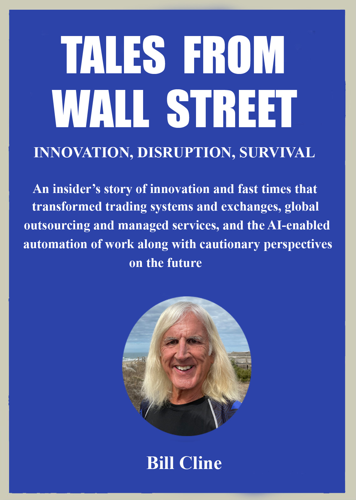

The Wall Street Fast Lane
No matter what you saw in books or movies about Wall Street in the '80s and '90s it was much wilder than that. Weed and cocaine were ubiquitous, and like alcohol they were often part of the business day, business deals, and after work entertainment. But it was also a period of transformational innovation and market disruption. Fortunes were made, some were lost, and an entire ecosystem of products, services, and businesses fed off the financial largesse of Wall Street during the digital transformation of trading systems, market data, and exchanges. Exclusive and expensive clubs, bars, restaurants, and luxury real estate, jewelry, clothing, and car retailers spent all year cultivating relationships with superstar traders and senior executives.
Like hungry western bears eagerly awaiting the all-you-can-eat buffet of the annual salmon migration, everybody on and around Wall Street counted down the days to awards of six, seven, and eight figure bonuses at big investment banks and funds. Financial beneficiaries extended well beyond traders and top executives to include IT and software professionals developing the advanced technology, applications, and algorithms that led to success in the markets. It included the operations staff that kept ever larger and more complex trades flowing smoothly. Middle and back office professionals processed trades and maintained real-time trading positions, risk exposure, P&L summaries, and audit trails to appease the regulators.
There were plenty of trading and investment management profits to share on Wall Street during these years, and the often life changing year-end bonuses were expected by professionals at all levels. In many instances the annual bonus was larger than the guaranteed yearly salary, the size tied to measurable performance excellence in someone’s given role. Artificial preferences regardless of justification were nonexistent, and excuses didn’t work well on Wall Street nor at the IT and data vendors or big consulting firms selling to Financial Services (FS).
Sometimes large bonuses were expected by employees who thought they were better than they were, but they usually weren’t around for long. Wall Street ran on numbers, and tangible performance results were measured and what really mattered for compensation and promotion decisions. Performance might mean trading profits for a trader, returns for an investment manager, or trade processing speed, efficiency, and cost optimization in operations. Performance measurements were objective, transparent, agnostic, and uncorrupted by unsupported subjective arguments.
Getting a smaller than expected bonus was disappointing, but most accepted they needed to improve performance relative to their peers. No bonus in a given year was a message to improve quickly or call your favorite headhunter. Low or no bonuses were usually a precursor to termination as part of the yearly culling of the bottom 10+% of performers. Wall Street high-performance culture was survival of the most deserving, and the transparent, preference-free pursuit of excellence produced superior business outcomes and happier, more productive employees.
Trading knowledge was lucrative and a high performer’s job on Wall Street was secure. Nobody I knew cared about race, color, nationality, sex, gender, academic credentials, politics, or who somebody slept with. Wall Street in the '80s and '90s was a highly competitive and transparent meritocracy that created a high-performance work culture free of distortions from unearned advantages or preferences.
Wall Street employees at all levels were well compensated as were the hardware, software, application, data, and professional services vendors who designed, developed, sold, and implemented the high-frequency and algorithmic trading innovations that fueled lucrative Wall Street profits. My first trading system company’s product replaced stand-alone terminals with integrated “video switching” systems for traders to access real-time market data, analytics, and applications. Then I made video switching obsolete by introducing digital trading systems that supported sophisticated trading applications and algorithms running over high-speed networks. Digital disruption was worldwide, and it forever changed global capital markets and scrambled the list of winners and losers.
As a young trader I clutched two different telephone handsets while “squawk boxes” streamed live trade talk from market makers, and I obsessed over stacks of computer screens flashing prices and trade sizes. The size and cacophony of noise on a big trading floor with thousands of traders screaming was overwhelming to outsiders. Special acoustic treatments made sure traders shouting to each other could be heard across the room, specialized lighting and ceiling designs minimized screen glare, and customized HVAC systems dissipated heat from thousands of agitated human bodies with computers and screens in an enclosed space.
At first traders wrote out paper trade tickets on the trading floor that were manually entered by operations into trade processing systems off the floor. I realized those slow manual processes couldn’t last much longer on Wall Street after learning about new software and hardware advances that made direct trade entry and automation possible. I thought about how technology could change trading and market data until I had a chance to change it myself as an entrepreneur. High-speed computers, real-time data and networks, trading applications and algorithms, and new electronic exchanges were both enablers and outcomes of the digital transformation of Wall Street.
I stopped trading just in time and started designing and selling state-of-the-art real-time trading and data distribution systems that eventually made most human traders obsolete. But my trading experience gave me real advantages when thinking about game-changing IT innovations in capital markets and global professional services. I looked for ways to turn the art of the possible into cost-effective reality. Digital trading systems and new electronic markets quickly spread worldwide, transforming 200 years of financial market history and rendering large trading floors unnecessary.
Two of my companies designed and developed the trading and market data distribution systems that made trading faster, cheaper, and more automated. Previously stereotyped and ignored mathematicians and software engineers became highly compensated “quants,” “data scientists,” and new members of the cool crowd. They used advanced mathematics along with real-time and historical market data to develop trading strategies they turned into applications and algorithms run by ultra high-speed computers and networks.
Wall Street paid premiums for milliseconds of speed advantage, so a close partnership formed with the computer, networking, and data companies leading the global performance race. Wall Street embraced any innovation that created competitive advantages, buying from and often investing in the companies delivering those new products and services. My two system companies integrated cutting-edge hardware, software, and network infrastructure to create trading systems we installed on trading floors worldwide. As trading system innovation slowed, I began selling long-term outsourcing and managed services contracts to run and continuously improve trading systems and many other front, middle, and back office operations for clients.
Every high-performance IT vendor had dedicated sales teams focused on Wall Street and financial services. They wanted the revenue but also the drug-like high that came from winning the intense competitions run by smart and demanding buyers, credentials they leveraged in marketing campaigns. In those days real drugs were also pervasive in financial services and sometimes played a role in how those Wall Street sales were won. It was all part of the game in the '80s and '90s so you had to draw personal ethical lines, but it was also a period of unparalleled financial services innovation.
I developed relationships with senior trading and IT executives on Wall Street and in the Silicon Valley tech industry who helped and supported me, especially at my smaller companies when we were still getting known. They introduced me to influential people and decision makers I didn’t already know, and I reciprocated by taking them out to great dinners, shows, concerts, and the hottest nightlife they could handle. By the late 1990s I was more visible in the media than any other capital markets consultant, and my TV, radio, and print interviews gave me added credibility with clients and strategic partners.
Wall Street’s real-time data and system innovations spread to other industries after the price of the enabling technologies decreased and numbers of skilled resources who could help expanded. Vivek Ranadive, one of my early trading system competitors who became a friend, went on to evangelize the “real-time enterprise” and promote “the power of now” after founding TIBCO Software. Later in my career I also moved beyond financial services to introduce new process automation “bots” across industries at the inception of AI-enabled “intelligent automation.” But the origins traced back to the real-time trading infrastructure and algorithms that fueled the digital transformation of Wall Street in the '80s and '90s.
A trading floor was an adrenaline rush dating to my first exposure as a recent college graduate. I wouldn’t have lasted long as an office worker but did consider a music career. I began playing in bands when I was 15, making enough money to help pay for my Duke University education when my family couldn’t have afforded it otherwise. I was still performing and recording while attending college, but a Warner-Elektra demo record I recorded wasn’t getting much play. Disco was becoming the hot new genre, but I was a rocker after starting out in jazz. So I accepted a management trainee job at a big bank after Duke, but I wasn’t happy there until I discovered trading.
Headhunters were relentless on Wall Street, sometimes doing devious and ethically questionable things to poach talent. Salaries were high to compensate for the mental and physical stress and pressure, but it was still hard to attract and retain good people because other firms were always hiring and recruiters circled like sharks. Everybody working on Wall Street regardless of role or level had some unique skills and strong cards to play for compensation and promotions.
My work developing trading systems and launching new electronic markets made trading and investing cheaper and more accessible for everybody while eliminating most trading commissions. Trading innovation and new alternative exchanges were spurred on by new regulations, eliminating old legacy rules that had protected members-only institutions like the NYSE at the expense of investors. New more transparent, liquid, and anonymous markets proliferated that introduced alternative execution methods and extended trading hours. Market structure innovation created new options for executing trades that resulted in better prices and lower trading costs, benefitting both retail and institutional investors.
Wall Street money sponsored many charitable events that raised millions for worthy causes, characterized by wealthy donors as “giving back.” But it usually seemed the charitable cause was secondary to opportunities for rich and successful people to party in some iconic hotel’s grand ballroom. I went to dozens of “charity galas” and award ceremonies “honoring” whoever had donated the most money to the cause that year. I bought expensive tables at hundreds of them over the years to invite my clients. Charities were another arguably more deserving beneficiary of the Wall Street ecosystem of money and wealth.
Performing on stage helped me develop the personal confidence and ability to interact with senior executives and head traders at a very young age. I developed an extensive network of business relationships, often through social interaction my competitors couldn’t match. I took clients and alliance partners to cool and exclusive restaurants and clubs in New York, Chicago, London, Paris, Tokyo, Sydney, Shanghai, and Hong Kong. Drinks and a great dinner were a given, but the night was usually just beginning after dinner. It was a card to play and part of the game.
I developed connections at the hottest clubs and restaurants few people knew about and even fewer could get in, and I got tickets to sold out Broadway shows, museum openings, and private suites at concerts and sports events. I aggressively did whatever I could to win deals, but I always played by the rules albeit with a liberal interpretation of some gray areas. During the '80s and '90s there were few red lines other than money changing hands. As policies and business norms changed in the 2000s I changed too, but there was less internal and industry camaraderie, everybody had less fun, and many business outcomes suffered.
Today’s highly restrictive rules for client socialization in professional services constrain collaborative innovation and strategic alignment with clients like I developed. Client entertainment was an important way to foster those relationships, and it made doing business more productive and fun. Now cost caps and extreme restrictions on permissible client entertainment and can make going to Chick-fil-A for a sandwich and Cookies & Cream milkshake look like a decent option. It’s an overreaction to a nonexistent problem.
Most of my product, data, and service innovation ideas were my own, but sometimes I made the ideas of others real as I did with the Intercontinental Exchange (ICE). Successful selling on Wall Street meant winning tough functional, technical, and price comparisons in a smart, demanding risk/reward culture. Cost was unimportant compared to functional, technical, or service differentiation that led to an advantage in the market. In many instances the target ROI for an innovation investment could be realized in a single lucrative trade or by avoiding a big downside risk.
I was able to see business inefficiencies and then think of new product and service innovations, and I studied cutting-edge IT advances to understand what was technically and functionally feasible. Creativity, confidence, leadership, critical thinking, and problem-solving abilities along with client socialization skills that leveraged my stage experience led to impactful new product and service ideas that kept changing capital markets and other industries.
After the digital transformation of Wall Street trading systems that began with my first all-new product Triarch, the marginally controlled trading floor chaos I loved was replaced by computers, networks, datafeeds, algorithms, and applications running in equipment rooms. There were many fewer traders, much smaller trading floors, and traditional exchanges fought for survival against new market entrants open for longer hours that introduced faster, cheaper, more liquid, and more transparent trading.
Now the real action was in the flashing lights and perpetual hum of high-speed computer infrastructure and cooling systems in secure, high-tech equipment rooms. Computers were faster, mostly smarter, could analyze infinitely more prices and markets simultaneously, and made fewer mistakes than human traders. The computers also didn't drink or do drugs, complain, screw the employees, succumb to stress requiring pharmaceuticals or therapy, or get paid millions in salary and bonus only to still want more.
Wall Street and global capital markets operated at a pace and with pressures few people could conceive of or endure, but some people like me thrived in the adrenaline-fueled lifestyle if you avoided too many crutches. Weed and alcohol had long been part of the Wall Street scene, but the surge of cocaine in the 1980s was different and ruined lives. The financial and personal rewards of working on Wall Street were diverse and many, but it came at a cost. I was lucky the era finally ended because the travel, stress and pressure, and too many late nights out only to do it again the next day were taking a physical and mental toll on me too.
By the mid-1990s Wall Street life was starting to settle down while regulatory changes spurred a new cycle of innovation. New alternatives to traditional exchanges like crossing and matching systems and investment bank “dark pools” that internally matched customer trades with a bank’s own trades proliferated. The new markets were faster and provided more trade execution alternatives, anonymity, and transparent liquidity, setting the stage for sophisticated trading and execution algorithms and applications to outthink and outmaneuver human traders.
High-frequency and algorithmic trading expanded from stocks into bonds, derivatives, commodities, and foreign exchange. Most trades were now executed by “smart algorithms” that accessed and compared fast, liquid electronic markets to get “best execution” that was measured and reported on. Better trade executions were particularly impactful on large trades like those of big institutional investors and funds, so investors large and small benefited.
Budgets were effectively unlimited for market makers and high-frequency arbitrage traders to win the speed race, where shaving milliseconds off data delivery led to unique market insights and low-risk trading profits. Highly specialized hardware, software, data, networking, and services vendors sold financial institutions the means to compete and win in the markets. Everybody profited including me.
The stately marble environs of the NYSE and the amphitheater “trading pits” of the Chicago commodity and options exchanges became expensive liabilities. They were costly to maintain and enhance but no longer served any real purpose. Exchange trading floors were good TV sets for shows like CNBC’s Squawk on the Street where I did interviews, but nothing significant happened on them any longer after trading and market making became electronic and automated.
Operating the physical exchange trading floor diverted management attention and money needed to fund innovation and growth, and new alternative exchanges took more and more market share from traditional exchanges. The innovators made acquisitions, traded more asset classes electronically for more hours, expanded into new geographies, and prospered. Legacy exchanges that didn’t adapt either faded into oblivion or were acquired by the winners.
My former client NYSE was ultimately acquired by the Intercontinental Exchange, one of my new startup clients that my project team brought into existence. NYSE leadership dismissed my warnings about competitive threats for too long, too slow transforming their IT infrastructure and never developing an effective growth strategy. NYSE stayed a private members-only club for too long while NYSE members became dinosaurs. Meanwhile, publicly traded European exchanges were using their investment capital to make acquisitions and fund global expansion and strategic alliances.
As the '90s came to a close I had a front row seat to the separation battles of Andersen Consulting (AC) from Arthur Andersen (AA) and the global AC re-branding as Accenture preceding the blockbuster IPO. I’ll share the inside story of how we won the right to separate from AA and previously untold details of intrigue and political maneuvering along the way. Billions of dollars and many careers were at stake, and how we prevailed in arbitration and then executed a global re-branding and IPO in little more than a year will be on business school curriculums for many years.
It was one of the fastest, most complex, and highest value global business transformations ever undertaken, and the Accenture IPO was only 2 months before the 9/11 terrorist attacks. You’ll hear about the Andersen Worldwide global partners meeting in Paris where our future was decided and inside AC strategies to win in the International Chamber of Commerce arbitration. I was the long-time global client partner for Accenture’s lead investment banker Goldman Sachs, and I represented financial services as the capital markets managing partner on the roadshow marketing Accenture IPO shares to big institutional investors.
I was also in New York City on 9/11 and only survived through a highly improbable twist of fate. It involved a scheduled and then abruptly postponed London trip followed by an unplanned stop at my office that morning before going to the big market data conference I was sponsoring at Windows on the World. I survived while hundreds of colleagues, clients, and friends at the conference and working in the towers didn’t. Windows on the World was on the 106th floor of One World Trade Center, and nobody escaped from up there. They were all victims of senseless ideological extremism by Islamic terrorists willing to kill innocent people just going to work, clueless about their bullshit cause or grievance.
In the weeks after 9/11 Accenture helped companies and the city of New York recover even as we dealt with our own personal and professional losses. The region’s telecommunications and network infrastructure in lower Manhattan was destroyed, and the global financial industry would have collapsed without data and communication between New York and the rest of the world reestablished.
Nothing was ever the same after 9/11, from flying to just getting through building security to meet with clients. I still have a lot of bitterness, unable to forget seeing Muslims in many countries dancing in the streets celebrating 9/11 and the death of so many of my friends and colleagues. It took me a long time to come to terms with how close I came to dying myself that day and would have left behind a wife and one-year-old son. The events of 9/11 led me to leave New York and move to South Carolina in 2003, but I still flew to New York or somewhere else in the world every week for another 16 years.
After resigning as the Accenture capital markets global managing partner in December, 2007 I did independent consulting, created and taught capital markets training seminars, and served on boards for a few years before joining KPMG in 2012 and leading Intelligent Automation. I was selling cutting-edge AI-enabled process automation business solutions long before public awareness of AI grew after the launch of ChatGPT.
It let me explore new ideas for using software process automation, algorithms, and AI to create new outsourced managed services. Intelligent automation extended operational efficiency and quality improvements beyond the inherent limitations of outsourcing and labor arbitrage. But after going back to full-time work I found meritocracy had become mostly a legacy of the past and that work life and business norms had changed, but not for the better.
The preference-free meritocracy of Andersen Consulting and Accenture had given way to institutionalized preferences for special identity groups and “diversity goals.” Diversity goals became de facto mandates, a code phrase that in practice meant quotas in hiring, promotion, and compensation decisions. I didn’t like it nor did high performers who lost out to preferred identity group members that had inferior qualifications and performance metrics. Such artificial gaming of the system would certainly have changed my own career progression and slowed the pace of innovation.
Business outcomes suffered, and most top leadership was too isolated from rank-and-file employees to see the widespread dissatisfaction with the erosion of meritocracy even if imperfect. Leadership ensconced in top floor offices mistakenly believed that HR corporate platitudes promoting diversity and special preferences to achieve it were welcomed by employees.
Promotions of less qualified and sometimes clearly unqualified individuals into senior roles elicited much internal chatter, and our highest performers not in a preferred identity group started resigning. Many senior managers understandably lost faith that superior performance would earn them admission into the partnership if they lacked some qualifying preference trait. KPMG wasn’t alone, and in those years the pastures weren’t much greener elsewhere other than in entrepreneurship and the tech industry.
Working on Wall Street in the '80s and '90s was an amazing experience that established the foundation for my entire career. It was life in the fast lane personally and professionally, but it was also an unprecedented period of innovation, market disruption, and the digital transformation of trading, capital markets, exchanges, and global professional services. Here’s my story…
